Tipos de trastorno bipolar
Trastorno bipolar tipo I:
Presenta episodios maníacos que duran al menos siete días, estos pueden ser de mucha intensidad y el paciente puede requerir hospitalización.
Este tipo de trastorno también produce episodios depresivos separados, que suelen durar al menos dos semanas.
En este trastorno existe la posibilidad que ocurran episodios de alteraciones en el estado de ánimo con características mixtas simultáneas.

Trastorno bipolar tipo II:
En este tipo de trastorno se presentan patrones de episodios depresivos y episodios hipomaníacos, pero no tan extremos como los del tipo I.
Trastorno ciclotímico:
La persona presenta síntomas hipomaníacos y depresivos persistentes que no son tan intensos ni duran lo suficiente como para calificarlos como episodios. Estos síntomas ocurren al menos dos años en los adultos y un año en las y los niños y adolescentes
Síntomas del episodio maníaco
Sentirse muy optimista, animado, eufórico, o bien, extremadamente irritable o sensible
Actuar y pensar más rápido de lo acostumbrado; no tener necesidad de dormir

Tener un apetito excesivo por la comida, bebida, sexo u otras actividades placenteras
Síntomas del episodio depresivo
}Sentirse decaído, triste o ansioso; más lento o inquieto; tener problemas para concentrarse o tomar decisiones
Tener problemas para concentrarse o tomar decisiones; hablar despacio, sentir que no hay nada que decir u olvidar muchas cosas
Perder el interés en casi todas las actividades, incapacidad para hacer hasta cosas sencillas